Histoire d'Atos
- 1972
Naissance de Sligos de la fusion entre Cegos Informatique et la filiale du crédit Lyonnais Sliga
- 1991
Création de Axime à partir de la fusion entre la SEGIN, la SSII et la SITB
- 1997
Création d'Atos Origin à partir d'Axime et Sligos, 2 entreprises de services informatique
- 1999
Atos Origin acquiert Odyssée
- 2004
Acquisition de Schlumberger Sema
- 2011
Atos 0rigin achète Siemens et redevient Atos le 4 juillet
- 2014
Acquisition de Bull et Xerox ITO
- 2021
"Année noire" Atos quitte le CAC 40 suite à plusieurs offre qui n'aboutissent pas

Frise interactive